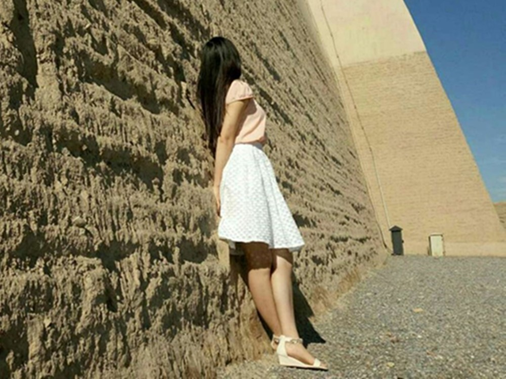
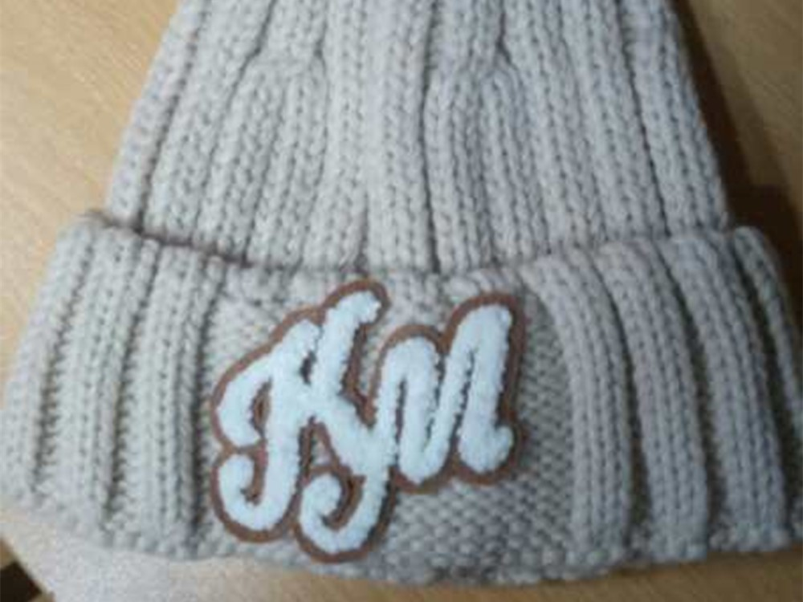
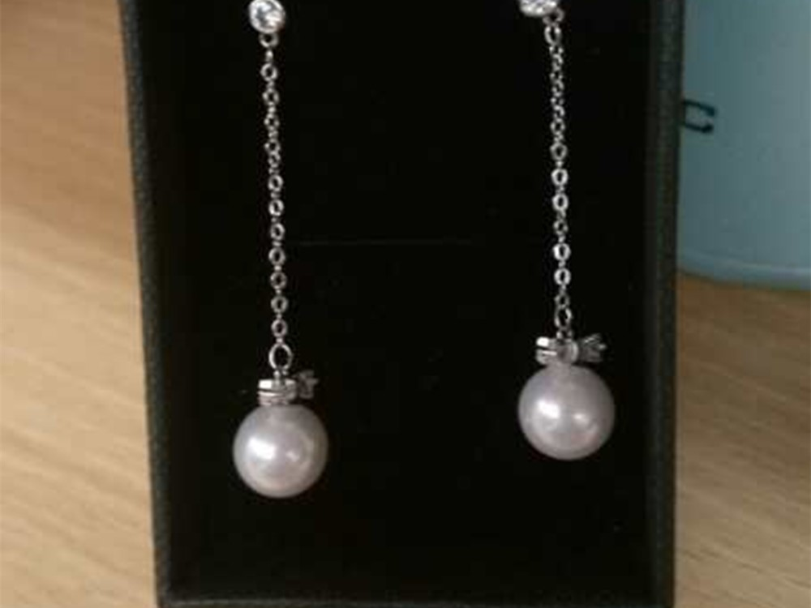
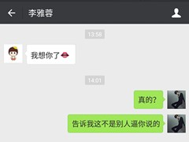
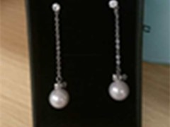

怀念一下我们的2016
（1/7）知道嘛？雅蓉，当时的我总是觉得你会有更好的前途，更美好的未来，不想自己拖你的后腿，笑死我了，说错了，你没有后腿。但是总是会想起你，想起你的笑容，想起你认真学习的侧脸。直到你发给我这个的时候，我才明白，我是你潜意思里面那个最能依靠、最适合的男孩，刚来北京白白的记忆里有了你的颜色。听到这首歌里吗？《What Are Words》，你可以去了解一下创作背景，很感人。我觉得两个人在一起，心在一起才重要，而不是躯体上贪念和享受，《狼少年》那样的爱情才是真正的爱情。说真的，我不怕时间和距离，你怕吗？ 查看原图
这是我最喜欢的照片了，可是你老说，难道是我审美有问题？以后不许你说它丑了，p过就p过，就虚化了一下周边的环境，有种中国古典美，你不觉得吗？我了解你，水瓶座有的时候就是会冷冰冰的。哈哈，没事，我会用我的温暖焐热的。我心里一直觉得你和别的女生不一样，你是否也觉得我和别的男生也不一样呢？我怕第一次惹你生气，有了就不完美了，所以我会用最大的胸襟来包容你的那些小脾气。 查看原图
对！没错，你和金毛一样聪明，这张就是你的头像，哈哈！当你我们一起参加完毕业音乐会在操场上的你就是这个样子的，当时我还劝你不要坐到地上，会着凉，你穿的雪白的裙子，很好看，那天晚上，你还记得吗？当时我买了两个大杯粥，当时我也傻，人家都买奶茶的。等会，你先让我笑会，我们两就站在那里边喝粥边看音乐会，算了，这篇笑的写不下去了，翻！！ 查看原图
看，这张图我修改过两次，第一次的时候修的腿太宽了，虽然时间紧张，但细心的我还是返回来检测了一遍，不然修宽了你的腿你会打我吧，淡粉色的上衣配上白色的裙子，还有凉鞋，我就喜欢你这身干净利落的行头，看上去很有活力。但是以后记得穿袜子，温差大别让脚着凉了。  查看原图
老太太的脑子，O(∩_∩)O哈哈~，上面还有"Kiss Me"，我在想什么时候我才能吻到你呢？你放心，我不会强求你做任何你不喜欢做的事情，缺失的那些时间都会给你的，我一直认为是因为我每天早上在公寓帮大家开走廊的灯才能追到你的，因果关系。不过你说你需要个帽子的时候，我就在地铁上开始留意别的女生戴的帽子了，确实有比这个帽子好看的，不过这也要看谁戴了，你带哪个帽子都好看。  查看原图
这一张呢，是你给阿姨买的礼物，我得学呀，学习你喜欢什么款式，喜欢什么颜色，王振军说的对，就算是你买了，人家觉得不好看也不用，哈哈，女生就是事情多。还有你给小孩买的衣服，不是给我买的我在这里就不展示了。但当你说想给我小姨家的小孩买衣服的时候，我觉得很高兴呀，终于在我小姨家小孩身上找到一点存在感了。不管这些话会不会惹你生气了，反正这个网站是我做的嘛，有本事你也为我做一个。略略略~~  查看原图
最后一张了，雅蓉，不然赶不上火车了，你不知道拍照在后面拍到的脸小嘛~，一点常识都没有滴。不过这样也好，能更清楚的看到你。(*^__^*) 嘻嘻……，你给我发的“一个重要的决定”，我没事就会拿出来看一遍，上班的时候想到你就傻乐。好吧，我承认天秤座恋爱起来是有点疯狂，但谁让我还这么年轻呢。这个独一无二的网站是我送给你的生日礼物，www.ixiaobai.top，记住域名哦，无论你走到世界任何角落，只要有网就能访问到它，就能感受到我的爱。生日快乐，雅蓉，我爱你! 查看原图

- 
- 